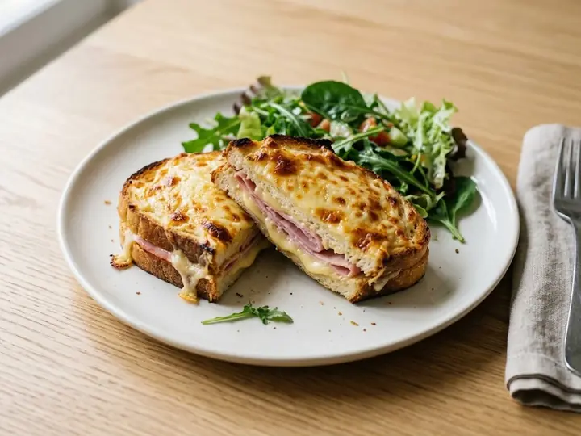

France · Pork · No. 092
Croque Monsieur-Style Ham & Cheese Toastie with Salad
A single portion of French cooking, ready in 13 minutes with 5 minutes of prep. Written for one, so there is nothing to halve and nothing to waste.
Method
- 1
Spread one slice of bread with the mustard and layer with the ham and half the cheese, then top with the second slice.
- 2
Scatter the remaining cheese over the outside of the sandwich.
- 3
Toast in a dry frying pan over medium heat for 3–4 minutes each side until golden and the cheese has melted.
- 4
Taste and adjust the seasoning.
- 5
Serve with the salad leaves tossed in the olive oil.
Find more like this